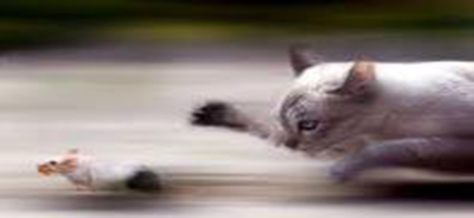
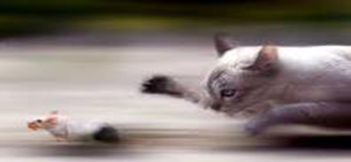

ضدنور

ضد نور یا سیلوئت تکنیکی است که در آن منبع نور در پشت سوژه قرار دارد و در قویترین حالت به دلیل تندی نور، سایهای از سوژه بر روی عکس ایجاد میشود. زیباترین حالت زمانی پیش میآید که خورشید در حال طلوع یا غروب است و پسزمینه به رنگ نارنجی یا زرد مشخص میشود. عکاسی ضدنور یکی از روشهای انتقال اندوه، احساس و حالتهای عاطفی به بینندهاست. ممکن است بیننده با دیدن این نوع عکسها به درک درست و واضحی از سوژه نرسد، اما بخش تیره و سیاه تصویر باعث شکل گیری قدرت تخیل بیننده میشود.
ادامه مطلب
اچ دی آر

تصویربرداری دامنه دینامیک بالا یا HDR به مجموعهای از تکنیکهایی گفته میشود که نسبت به روشهای معمول، امکان وجود دامنه دینامیک روشنایی بیشتری بین نقاط تاریک و روشن را فراهم میکنند. عکسهای اچدیآر با ترکیب چند عکس به وجود میآیند؛ برای هر عکس اچدیآر، باید چند عکس با کادر کاملا یکسان تهیه کرد (معمولا ۳ یا ۵ عکس) و هر عکس باید با نوردهی خاصی گرفتهشده باشد؛ به این ترتیب که یک عکس با نوردهی معمولی و بقیهٔ عکسها با نوردهیهای کمتر و بیشتر.
ادامه مطلب
پنینگ
پنینگ یا کنارگردی دوربین، نام تکنیکی در عکاسی میباشد که برای نشان دادن تحرک سوژهها به کار میرود. پنینگ در حقیقت به حرکات افقی، عمودی و یا چرخشیِ یک تصویر ثابت و یا ویدئو اشاره دارد. در این تکنیک یا سوژهٔ اصلی متحرک است که آن را از محیط ثابت اطرافش مجزا میکند یا سوژه ثابت است و دوربین حرکت میکند که عکاسی هر دو حالت منجر به القای حس تحرک در عکس میشوند. کاهش سرعت شاتر باعث بیشتر نمایان شدن تحرک در عکس میگردد.
ادامه مطلب
مادون قرمز

عکاسی مادون قرمز تکنیکی است که هنگام عکسبرداری، قسمت مرئی نور حذف شده و فقط پرتوهای مادون قرمز ثبت میشوند. رفتار انعکاسی مادون قرمز با نور مرئی فرق دارد و چون چشم انسان مادون قرمز را نمیبیند، عکسهایی به وجود میآید که در واقعیت دیده نمیشوند. نمونهای از تفاوتها، انعکاس گیاهان است که در عکاسی مادون قرمز، به رنگ سفید ثبت میشوند.
ادامه مطلب
سراسرنما (پانوراما)
سراسرنما یا پانوراما تکنیکی است که سبب ایجاد عکسهایی با فضای وسیعتری نسبت به عکسهای معمولی میشود. نحوهٔ ساخت آنها چنین است که با کنار هم قرار دادن تعدادی عکس معمولی بهوجود میآیند. در این تکنیک، باید عکسهای بیشتری از صحنه ثبت کرد و سپس با استفاده از نرمافزار آنها را بههم چسباند
ادامه مطلب